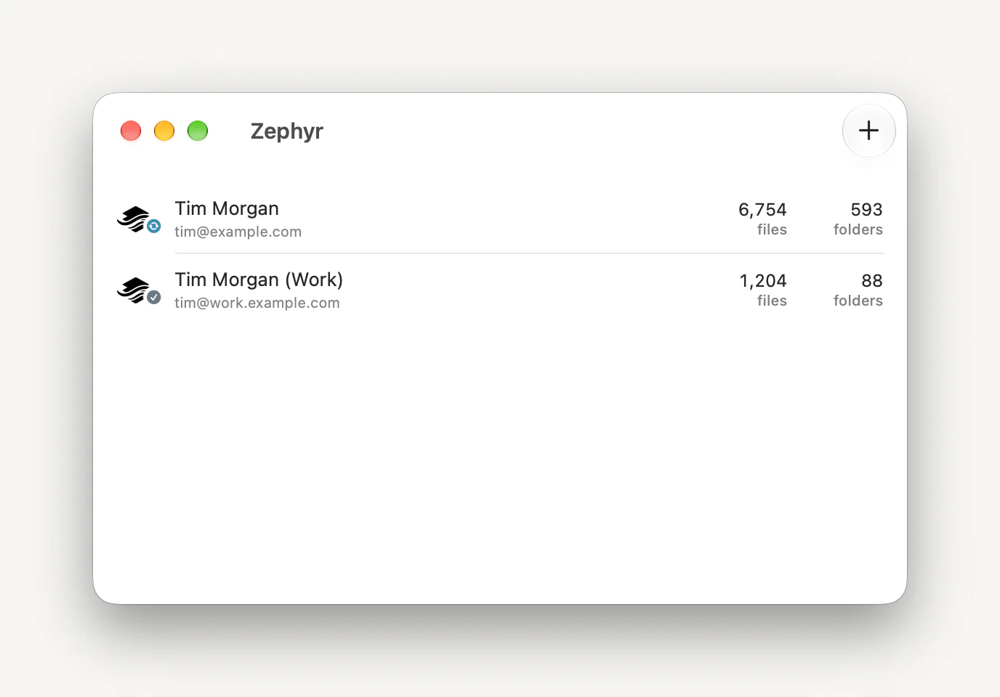

Zephyr affiche dans le Finder les fichiers d’un compte Dropbox dès que vous associez ce compte. L’association ouvre la page de Dropbox elle-même, où vous autorisez l’accès que Zephyr demande ; une fois l’accès autorisé, vous revenez directement dans Zephyr.
Installez Zephyr au lieu de le glisser hors d’une image disque téléchargée. L’association fonctionne où que se trouve Zephyr, mais macOS exécute une app téléchargée depuis une copie temporaire qui lui est propre et n’affiche pas dans le Finder un compte associé à une telle copie. Consultez Si votre Dropbox n’apparaît pas dans le Finder.
Ayez votre mot de passe Dropbox sous la main. Vous autorisez l’accès sur le site web de Dropbox, et non dans Zephyr — Zephyr ne voit jamais votre mot de passe.

Cliquez sur Zephyr dans la barre des menus, puis sur Gérer les comptes…
Cliquez sur Associer un compte Dropbox… (+) dans la barre d’outils.
Vous pouvez aussi choisir Compte ▸ Associer un compte Dropbox… ou appuyer sur ⌘L.
Cliquez sur Associer un compte Dropbox…
La page d’autorisation de Dropbox s’ouvre dans sa propre fenêtre. Connectez-vous si vous ne l’êtes pas déjà, puis autorisez l’accès que Zephyr demande. La fenêtre se ferme d’elle-même une fois que c’est fait.
Le compte apparaît dans la liste, et Zephyr commence à construire un index de son contenu. La première indexation d’un grand Dropbox prend un certain temps ; vous n’avez pas besoin d’attendre qu’elle se termine pour utiliser vos fichiers.
Remarque : Fermer la fenêtre d’autorisation sans autoriser l’accès annule l’association et ne change rien. Cliquez de nouveau sur Associer un compte Dropbox… pour recommencer.
Dropbox peut aussi vous remettre un code à rapporter vous-même. Utilisez cette méthode si la fenêtre d’autorisation ne s’ouvre pas, ou si Dropbox signale un problème pour revenir vers Zephyr.
Dans la fenêtre d’association, cliquez sur Saisir un code à la place.
Cliquez sur Ouvrir Dropbox dans le navigateur, puis autorisez l’accès comme ci-dessus.
Copiez le code d’autorisation que Dropbox affiche, revenez dans Zephyr et collez-le dans le champ Code d’autorisation.
Remarque : Si vous avez fermé la page du navigateur ou si le code a expiré, cliquez de nouveau sur Ouvrir Dropbox dans le navigateur pour en obtenir un nouveau.
Cliquez sur Associer.
Associer un compte ne suffit pas à lui seul. C’est macOS, et non Zephyr, qui vous demande si un fournisseur de fichiers peut afficher des fichiers dans le Finder, et il ne propose le réglage qu’une fois un compte associé. Consultez Activer Zephyr dans le Finder.
Dans la fenêtre de Zephyr, cliquez sur le compte en maintenant la touche Contrôle enfoncée.
Choisissez Ouvrir dans le Finder pour afficher les fichiers de ce compte, ou Copier l’adresse e-mail pour placer l’adresse dans le presse-papiers.
Dans la fenêtre de Zephyr, cliquez sur le compte en maintenant la touche Contrôle enfoncée.
Choisissez Dissocier…, puis confirmez.
Dissocier révoque l’accès de Zephyr au compte et le retire du Finder. Rien n’est supprimé dans votre Dropbox.
Remarque : L’outil en ligne de commande zephyr conserve
ses identifiants séparément de l’app : il peut donc lister un compte associé par l’app, mais ne peut pas
agir en son nom. Exécutez zephyr auth link une fois pour l’outil, même si l’app est déjà configurée.
Consultez Installer l’outil en ligne de commande zephyr.